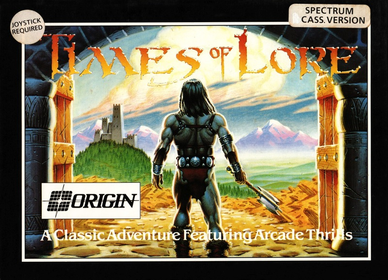
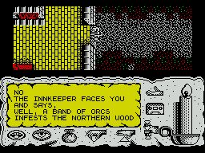

Times of Lore


{kind=link}

| Publisher: | Origin |
| Price: | £9.99 / £14.99 |
| Year: | 1989 |
| Source: | CRASH, Issue 66 |

Picture the scene: it is the dim and distant past, an age when the land was ruled by High Kings and Sir Clive was still dreaming up the ZX81. The present High King has disappeared, and the deputy appointed to look after his kingdom in his absence has the nation on the brink of collapse. The only way out of this depression is for some suitably heroic person (like yourself) to get three ancient wizardly artifacts (the Foretelling Stones, the Tablet of Truth and the Medallion of Power) together, and dig up (hopefully not literally) the old King from wherever he’s hiding.
Starting in the Frothing Slosh Tavern, in Eralan, you receive a task from a helpful prior. He tells you that you must retrieve the Foretelling Stones from the thieving raiders of the north. Once you’ve reclaimed the artifacts you must return them to the prior. And the rest you’ll have to find out for yourself!

Times of Lore is icon driven. You can converse with other characters (assuming they’re willing to talk to you!); examine items; get an inventory; pick up/drop things; use an item; load/save games; and offer items to characters. Pressing SPACE brings up an icon selector — unless someone is trying to strike up a conversation with you, in which case you talk automatically. To get on in the game you need to converse with loads of people — some of them have very interesting things to say. And there’s an awful lot of walking around to be done, too, so a pair of magic boots wouldn’t be a bad idea.
There is one more thing which is of paramount importance: DON’T HIT ANY VILLAGERS!! Smash away at orcs and archers to your heart’s content, but be very careful of hacking up members of civilised society. Should you let the ol’ sword ‘accidentally’ slip into someone’s stomach, then everyone in the game ignores you (or tries to kill you), and it becomes very difficult to make any progress at all.
To save a game, you have to spend the night at an inn, which has the useful side-effect of replenishing your energy (represented by a candle). Times of Lore is probably the best arcade adventure I’ve played. The documentation and packaging are excellent. Graphically, it’s brilliant, and there is a wide variety of music in the introductory sequence. I have no hesitation in recommending it to all but the most dedicated arcade player. Well ’ard!
MIKE
There is only one word to describe Times of Lore: enchanting. You get so involved in the game, thanks to the strong atmosphere and the excitement of achievement, that you really feel as if you’ve gone back in time. The all round presentation (both on screen and in the literature) is excellent, with a super, illustrated title sequence telling the story of the High King of Aralan. The game itself is set out in Gauntlet-style with ample colour in the towns, forest and bridges that make up the landscape. However, due to the control method, it’s all too easy to pop off some kind of serf with whom you were conversing. That aside, Times Of Lore is simply brilliant, buy it to believe it.
NICK
RATING
A long time since we saw such an enchanting, atmospheric challenge
| Presentation: | 94% |
| Graphics: | 90% |
| Sound: | 89% |
| Playability: | 94% |
| Addictivity: | 94% |
| Overall: | 94% |